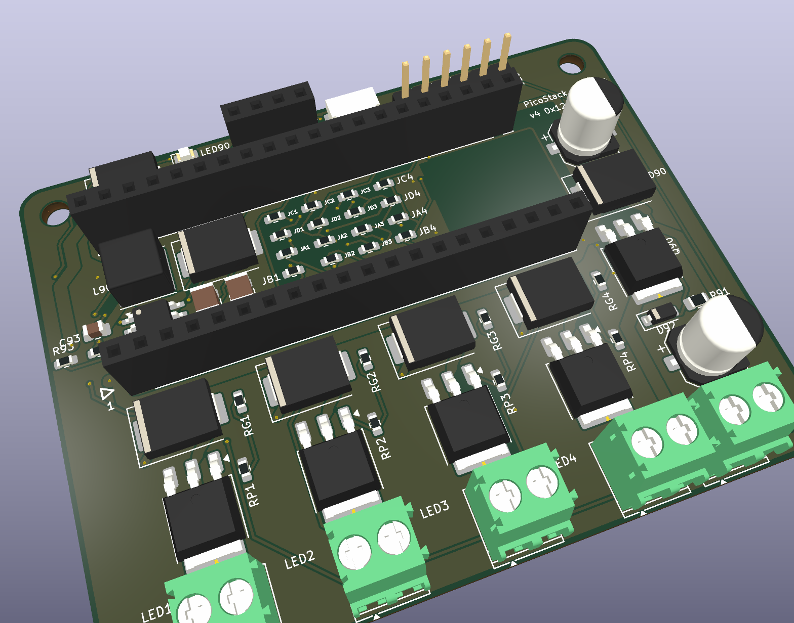
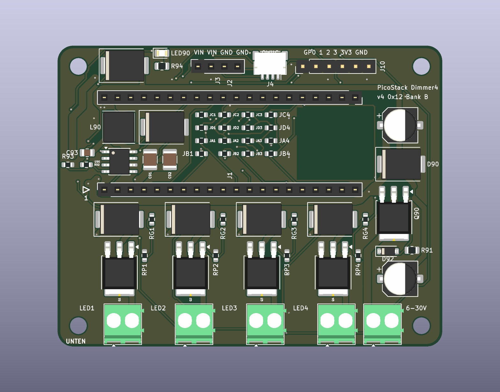

One board plugs into a Pico.
The Pico does the rest.
PicoStack v3 is a family of stackable modules with a 6–30 V input, screw terminals and a pair of Pico-native socket rows. There is no microcontroller on the module and no firmware to flash: the Pico drives every channel directly through a GPIO bank, chosen by a solder matrix on the board. Power it over USB while you program, from the 6–30 V terminal once it's installed — both at once is allowed by design.

Not drawn. Built.
There is no hand-drawn schematic and no hand-routed board in this repository. Each board is a pipeline of small, readable Python stages — and the committed KiCad files are their verified output. Placement is the one thing done by hand: by current path, written down as numbers the tests check.
# one board, end to end: tools/pcb/verlegen_v3.sh dimmer4 tools/sch/dimmermodul.py → KiCad schematic, ERC 0/0, self-checked tools/pcb/spec_dimmer_basis.py → placement by current path · 4 A trunk pre-wired · stitching tools/pcb/build.py → fresh .kicad_pcb from netlist + description KiCadRoutingTools → two passes: power nets wide, then signals tools/pcb/masseheiler.py → finds isolated ground copper, heals it with vias tools/pcb/strombelastung.py → every power net checked for width along its real path tools/pcb/steckerprobe.py → measures the finished board against the contract
Reproducible
Clone, run the pipeline, get a board. Every generated file is held against its generator by a test, so nothing can silently go stale.
Contract-driven
Socket positions, pin roles, GPIO banks, the antenna keep-out and the stack height live in one machine-readable file. Boards are measured against it — not against hope.
Verified for real
ERC and DRC caught none of the real bugs found while building this — a fail-unsafe e-stop gate, a crowbarred reverse-polarity FET, a 0.25 mm neck in a 4 A trunk, a board height at which an upside-down module would have plugged in. The project's own probes caught them all, each with a proof that it can fail.
The v3 board family
Three dimmer boards today, all 74 × 58 mm, routed, DRC-clean, with fab files ready; the motor module is being rebuilt on the same contract. Each carries its own supply cell and the same Pico-native socket pair. None has been manufactured yet — that is the next step.

LED dimmer family 1 / 3 / 4 channels · DRC clean
Three variants generated from a single parametric description — one schematic generator, one placement description, three boards.
- low-side N-MOSFET per channel (NCE6020AK), driven straight from a Pico PWM pin — 16 independent hardware PWM channels across the four banks, so four dimmers can share one Pico
- 3 A per channel, 4 A per module, flyback diode and a 3.5 mm screw terminal per channel, all terminals in one row on the bottom edge
- FETs tab-down right above their terminals, diodes above the FETs, the 4 A trunk hand-wired at 1.4 mm — placed by current, not by zone
Every module, on its own the supply cell
- 6–30 V in. Reverse-polarity P-FET with a Zener-clamped gate (fully on at 6 V, safe at 30 V), TVS, bulk capacitors, a TPS5430 buck to 4.9 V, and a Schottky diode into VSYS.
- USB and terminal at once. The Pico's own VBUS diode and the module's Schottky form an OR — program over USB, run from the terminal, nothing feeds back into either. That is the design; the first assembled board has to prove it (see ORDERING.md).
- Shared rail through the stack. A 1×4 stacking row carries VIN and GND to the boards below; 3 A per contact.
- Qwiic and a user header. GP4/GP5 come out as a JST SH Qwiic port, GP0–GP3 plus 3V3/GND on a pin header.
Why v3 dropped the module microcontroller the v3 change
- v1/v2 put an STM32C011, a flip-flop token chain and a bootloader path on every module so the Pico could address and flash them through the stack. Two and a half months in, none of it had run on a desk, no module firmware existed, and the exhibits this was built for need one or two modules, not forty.
- v3 keeps the good parts — Pico-native stacking, per-module supply, the contract, the red-proof discipline — and lets the Pico drive each channel directly. A 0603 solder matrix picks the bank (factory default: motor = A, dimmer = B). Four banks of four PWM pins, three ADC pins, a wired-AND emergency stop on GP6.
- Smaller, simpler, buildable. 74 × 58 mm instead of 82 × 73; no second microcontroller, no logic ICs, no SMD connector pairs, one stacking-header type for everything; and a MicroPython library that makes a dimmer three lines of code.
The contract
tools/stack_spec.py (contract v4) is the single source of
truth for anyone building a module. It is deliberately small — and
everything else is derived from it: documentation, tests, and the probes
that measure a finished board.
- Geometry. 74 × 58 mm outline, M3 hole pattern, two Pico-native 1×20 socket rows (the Pico lies across the board, USB to the left), a 1×4 power row — computed through helpers, never typed by hand.
- Stack height. 12 mm board to board, derived from the stacking header's socket and pin lengths, with a proof that 11 mm would have let the pins hit the board below.
- Banks. Four banks of four PWM-capable GPIOs, checked to be sixteen distinct hardware PWM channels; three ADC pins; GP6 e-stop, GP4/GP5 I²C, GP0–GP3 free. No pin is "free" without a role.
- Rotation safety. The M3 pattern is point-symmetric, so a module can be screwed on upside-down — the socket rows are placed so that it then plugs into nothing, measured as a minimum pin-to-contact distance.
- Per-module supply. Reverse-polarity topology, Zener gate clamp, Schottky into VSYS, regulator window covering 6–30 V — asserted against the generated netlist, not just built once.
- Placement rules. Bypass caps within 5 mm, buck loop parts within 6 mm, switch within 15 mm of its terminal, nothing in the antenna zone — as numbers the description is checked against.
# a taste of the real thing
BAENKE = {"A": (8, 9, 10, 11), "B": (12, 13, 14, 15),
"C": (16, 17, 18, 19), "D": (20, 21, 22, 7)}
ADC_BANK = (26, 27, 28)
BANK_VORGABE = {"Motor": "A", "Dimmer": "B"}
STECKER_POS = {"stapel_unten": ..., "stapel_oben": ..., "leistung": ...}
STAPEL_ABSTAND = 12.0 # EINSTECKTIEFE_STAPEL() == 7.5 mm
VERSORGUNG = {"eingang_v": (6.0, 30.0), "regler": "TPS5430DDAR", ...}
VERDREHT_STECKT_NIRGENDS() # (2.44 mm, True)
MONTAGE_REGEL = "ERST stecken, DANN schrauben."
Checks must be able to turn red
The engineering rule this project is built on:
A calculated dimension is a promise. A promise needs a check — and a check needs proof that it fails when the promise is broken.
Every gate in the toolchain ships with its red proof. v3 added three more, all invisible to ERC and DRC:
- A 0.25 mm neck in a 4 A trunk. The autorouter narrowed the supply trunk at a terminal pad and ran a second trunk through the flyback diodes. The current-capacity probe walks each power net's real path and went red; the trunk is now pre-wired by hand and the probe is a gate.
- A board height at which an upside-down module would plug in. At 56 mm the mirrored socket row lands 0.44 mm from the real one. The contract computes the distance; 58 mm gives 2.44 mm, and the test proves 56 fails.
- An enable pin tied to 30 V. The first draft of the buck cell tied the TPS5430's EN pin to the input rail; the pin is rated for 7 V. ERC saw a properly driven input. The netlist probe now asserts the pin is left open, and the datasheet limit sits next to the check.
Help it grow
The dream: a whole family of PicoStack hats, designed by different people, in different tools, all speaking the same contract. Three boards exist on paper, the motor module is next, the first order is the step after that.
firmware/pico/picostack.py); C or Rust
ports only need the bank table.